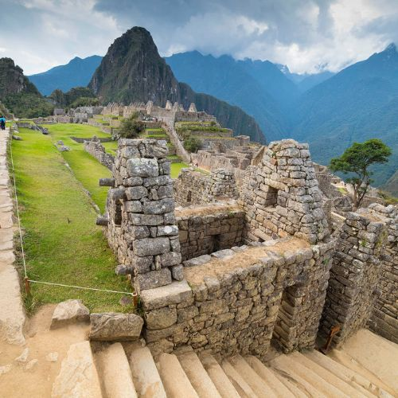
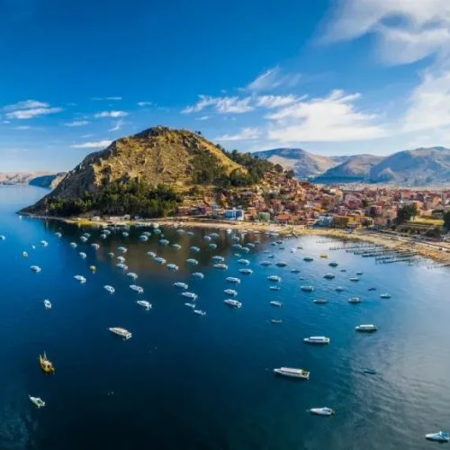

Peru: Uma Terra de Riquezas Culturais e Naturais
O Peru, localizado na costa oeste da América do Sul, é um país fascinante que mistura paisagens deslumbrantes, uma rica herança cultural e uma biodiversidade única. Com uma história milenar que remonta às civilizações pré-colombianas, como os Incas, o Peru é um destino que encanta viajantes e estudiosos do mundo todo.Machu Picchu
Machu Picchu é, sem dúvida, o destino turístico mais icônico do Peru e uma das maravilhas do mundo moderno. Localizado a 2.430 metros acima do nível do mar, nos Andes peruanos, este sítio arqueológico foi construído no século XV durante o auge do Império Inca. É frequentemente chamado de "Cidade Perdida dos Incas" por ter permanecido desconhecido do mundo até sua redescoberta em 1911 pelo explorador Hiram Bingham. Composto por terraços agrícolas, templos, praças e residências, Machu Picchu é um testemunho da engenhosidade e da arquitetura Inca. Cercado por montanhas cobertas por vegetação exuberante, o local oferece uma experiência mística e inesquecível. A caminhada até lá pelo famoso Caminho Inca é uma aventura à parte, mas também é possível chegar de trem partindo de Cusco.
Lago Titicaca
O Lago Titicaca, situado a 3.812 metros acima do nível do mar, é o lago navegável mais alto do mundo e está localizado na fronteira entre o Peru e a Bolívia. Este destino é famoso tanto por sua beleza natural quanto por sua importância cultural e histórica. Segundo as lendas locais, foi no Lago Titicaca que os fundadores do Império Inca, Manco Capac e Mama Ocllo, emergiram enviados pelo deus Sol para civilizar os povos andinos. Além da paisagem deslumbrante das águas azuis rodeadas por montanhas, o lago abriga várias ilhas habitadas, como as Ilhas Flutuantes dos Uros, feitas inteiramente de totora, uma planta aquática. Essas ilhas são lar de comunidades indígenas que ainda preservam um estilo de vida tradicional. Outra ilha famosa é Taquile, onde os habitantes são conhecidos por seus coloridos tecidos artesanais e hospitalidade. A região do lago é ideal para explorar culturas ancestrais e admirar paisagens únicas.